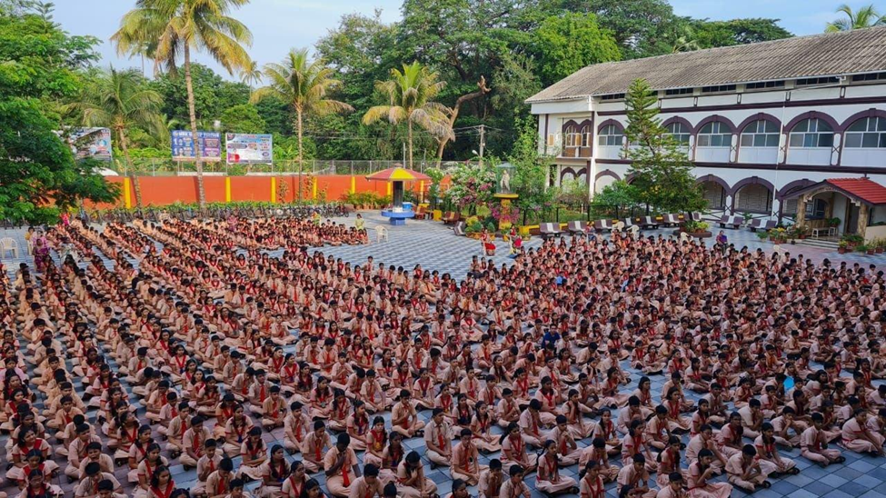
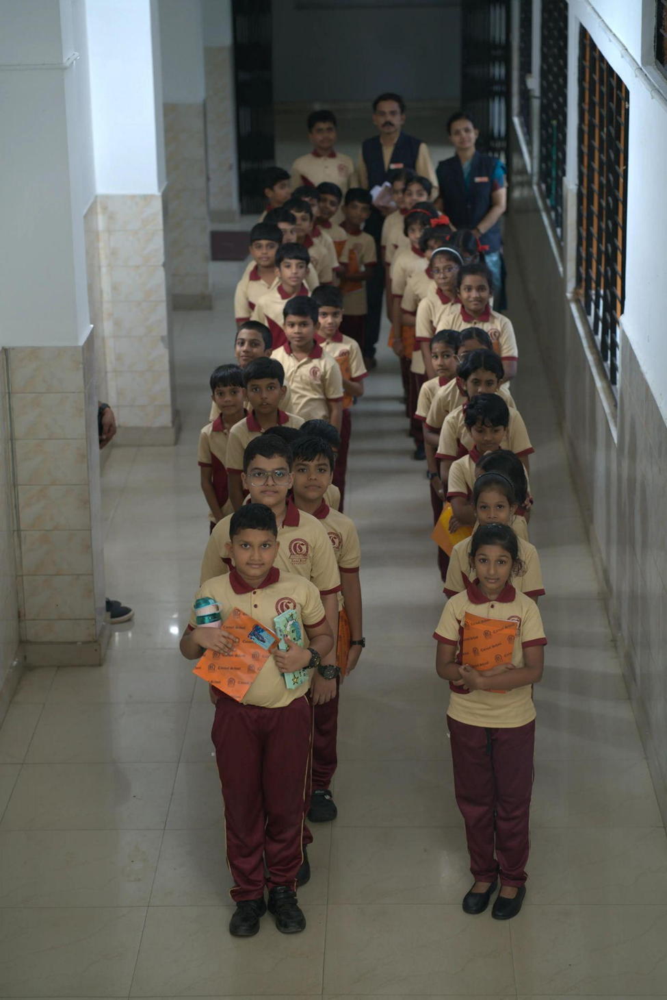
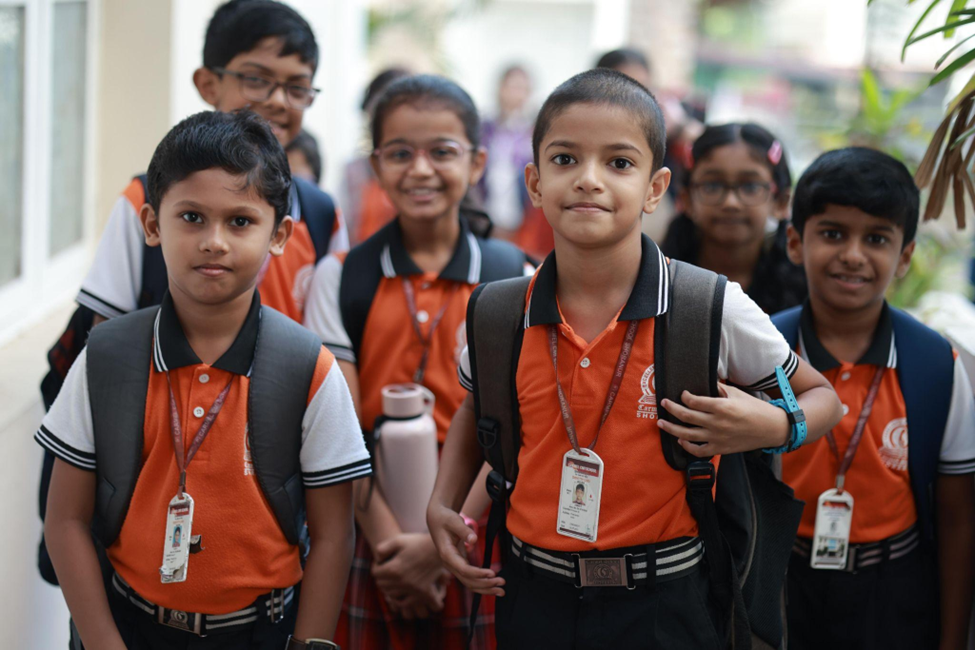

K.E. Carmel School
About Us
K.E. Carmel School, Siliguri is a co-educational institution committed to providing quality education rooted in strong values and discipline, in a safe and supportive environment.
School Life
A look at assemblies, classroom moments, and daily campus life.




About K.E. Carmel School
The school focuses on academic excellence while ensuring the overall development of students in a disciplined and nurturing environment.
History
K.E. Carmel School is part of the Carmel educational tradition in India, managed by the Carmelites of Mary Immaculate (C.M.I.). The institution was established with the vision of offering meaningful education that combines knowledge, values, and character formation.
Our Commitment
- Strong academic foundation
- Value-based learning
- Personal growth and development
Vision
To provide quality education that nurtures intellectual growth, moral values, and responsible citizenship—preparing students to face future challenges with confidence.
Mission
- Promote academic excellence through effective teaching and learning
- Instill discipline, integrity, and strong moral values
- Encourage critical thinking and problem-solving skills
- Support the holistic development of every student
Principal’s Message
At K.E. Carmel School, we believe that education plays a vital role in shaping the future of every child. Our goal is not only to help students achieve academic success but also to guide them in becoming responsible, confident, and value-driven individuals.